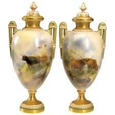
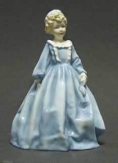
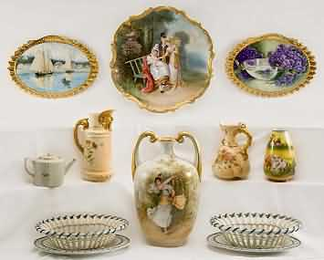
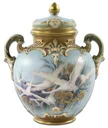

现在英国最古老的瓷器品牌「皇家伍斯特」，由约翰．沃尔博士( Dr.John Wall)和药剂师威廉．戴维欺(William Davis)创立于一七一五年。 其创新的制瓷技术与精湛的画工备受推崇; 一七八九年，英王乔冶三世颁希皇室御用状(Royal Warrant)，以彰显皇家伍斯特御用的身价。
皇家伍斯特成名极早，原因归功于合并如( Chamberlain)、(Grainger)、( Hardley)等窑厂，吸收了来白不同窑厂的技术， 奠定了深厚的根基。其不朽的杰作，如名画般精美的「水果素描」 Painted Fruit作品，为其重要代表，至今仍接受订购生产。 皇家伍斯特瓷器延续将近三百年的制作侍统，不断创新现代餐具， 以优雅的品味和高质量的骨瓷，深得行家的喜爱。
英国皇室为了因应过去500年来历代帝王的不同喜好，而于皇室宫廷中设立"The Royal Collection"。其总类包含绘画，速描，水彩，家具，瓷器，时钟，银器，雕刻，珠宝，书籍等。这些皇室精品都象征着过去因英国皇家生活方式的呈现。
The Royal Collection是属于英国国家所有，以前由皇后所主理，但如今已归为国有。The Royal Collection所有的皇家骨瓷瓷器均为英国本地( Staffordshire )传统皇家艺匠师傅以流传百年的皇室工艺纯手工制作，再镶嵌两百五十年的古法手工绘彩的22K金彩饰边，典雅奢华美丽无比。并附说明书于原厂礼盒包装内，专供皇室成员或外交使节送礼使用（高档手工制作皇家骨瓷瓷器建议一定要以手洗，切勿放入微波炉或洗碗机内)。
The Royal Collection的白金汉宫皇室御用骨瓷瓷器系列是以乔治六世与威廉王六世的精美盔甲图案为构图而设计出的英国皇室御用白金汉宫系列皇家骨瓷瓷器，其设计是启发于在白金汉宫的餐具室发现的一片珍贵古董皇家骨瓷瓷手工彩绘饰盘。专供皇室成员或外交使节送礼使用。美丽奢华的英国皇室御用白金汉宫系列皇家骨瓷瓷器件件皆是足以让收藏家世代珍藏的顶级珍品。
The Royal Collection的维多利亚女王皇室御用骨瓷瓷器系列是表彰维多利亚女王的黄金年代的最佳表征(1819-1901)。其设计启源于由维多利亚女王为参加1851年"Great Exhibition"所制作的英国皇家骨瓷瓷器为参考，上面还添加了女王的签名。 维多利亚女王统治了英国六十三年又七个月，是英国史上在位最久的君主，其在位期间不论在文化或世界上都有举足轻重的影响，也是英国的黄金年代，那个黄金年代的最美丽奢华的维多利亚女王皇室御用骨瓷瓷器系列件件皆是足以让收藏家世代珍藏的顶级珍品。